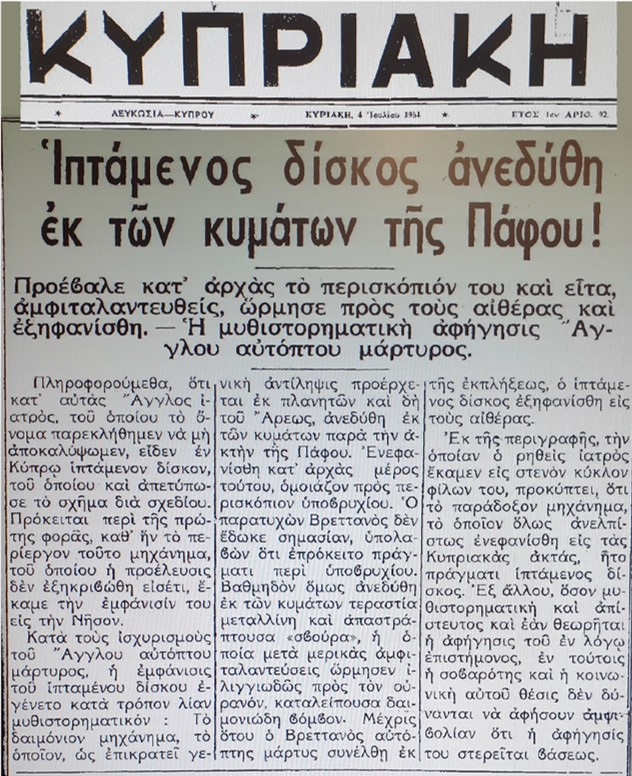

Description Περιγραφή
On 4 July 1954, the Cypriot newspaper Κυπριακή (Nicosia) published a front-page report titled "Flying Disc Rose from the Waves of Paphos!" The article states that an English doctor — whose name was withheld at his request — saw a flying disc over Cyprus and drew a sketch of its shape. The newspaper noted that this was the first time such a machine, whose origin was still unknown, had appeared on the island.
According to the doctor's account, the encounter was dramatic. A part of the object first appeared above the water, resembling the periscope of a submarine. The witness, who was nearby, initially took it for exactly that and paid little attention. Then, gradually, an enormous metallic and gleaming "door" rose from the waves. After oscillating a few times, it shot into the sky at dizzying speed, leaving behind a tremendous roar.
By the time the British witness had recovered from his astonishment, the flying disc had disappeared into the sky. The report noted that, however improbable the account might seem, the witness's seriousness and social standing left no doubt that the description was given in good faith.
The Κυπριακή report also mentions that the general belief at the time was that such objects originated from other planets — Mars in particular.
Στις 4 Ιουλίου 1954, η εφημερίδα Κυπριακή (Λευκωσία) δημοσίευσε πρωτοσέλιδο ρεπορτάζ με τίτλο «Ιπτάμενος δίσκος άνεδύθη εκ των κυμάτων της Πάφου!» Το άρθρο αναφέρει ότι ένας Άγγλος γιατρός — του οποίου το όνομα παρεκλήθη νά μη αποκαλυφθεί — είδε έναν ιπτάμενο δίσκο στην Κύπρο και απετύπωσε το σχήμα του με σχέδιο. Η εφημερίδα σημείωνε ότι ήταν η πρώτη φορά που ένα τέτοιο μηχάνημα, του οποίου η προέλευση δεν είχε εξακριβωθεί ακόμη, έκανε την εμφάνισή του στο νησί.
Σύμφωνα με τη διήγηση του γιατρού, η συνάντηση ήταν δραματική. Κατ' αρχάς εμφανίστηκε πάνω από το νερό ένα μέρος του αντικειμένου, που έμοιαζε με το περισκόπιο υποβρυχίου. Ο μάρτυρας, που βρισκόταν εκεί κοντά, το εκτίμησε ως τέτοιο και δεν του έδωσε σημασία. Στη συνέχεια, βαθμηδόν, μια τεράστια μεταλλική και απαστράπτουσα «θύρα» ανέβηκε από τα κύματα. Αφού ταλαντεύτηκε μερικές φορές, όρμησε ιλιγγιωδώς προς τον ουρανό, καταλείποντας δαιμονιώδη βόμβο.
Μέχρις ότου ο Βρεττανός μάρτυς συνέλθη εκ της εκπλήξεως, ο ιπτάμενος δίσκος εξηφανίσθη εις τους αιθέρας. Το ρεπορτάζ σημείωνε ότι, όσο μυθιστορηματική και απίστευτη και εάν θεωρείται η αφήγηση, η σοβαρότητα και η κοινωνική θέση του μάρτυρος δεν άφηναν αμφιβολία ότι η αφήγηση δόθηκε με καλή πίστη.
Το ρεπορτάζ της Κυπριακής αναφέρει επίσης ότι η γενική αντίληψη της εποχής ήταν ότι τέτοια αντικείμενα προέρχονταν από άλλους πλανήτες — και δη από τον Άρη.
Source Material Πηγαίο Υλικό

Primary source: Κυπριακή (Nicosia), front page, 4 July 1954. Year 1, issue 12. Held in the centre's archive. Κύρια πηγή: Κυπριακή (Λευκωσία), πρωτοσέλιδο, 4 Ιουλίου 1954. Έτος Α', αρ. φύλλου 12. Φυλάσσεται στο αρχείο του κέντρου.
Notes Σημειώσεις
This case remains under investigation. It is significant as the earliest documented UAP report in Cyprus involving a water-to-air transition — a class of observation that has since been recorded in numerous coastal sightings worldwide. If you witnessed this event or hold additional documentation, please contact us via the Report a UAP form. Η υπόθεση παραμένει υπό διερεύνηση. Είναι σημαντική ως η παλαιότερη καταγεγραμμένη αναφορά UAP στην Κύπρο που αφορά μετάβαση από το νερό στον αέρα — κατηγορία παρατήρησης που έχει έκτοτε καταγραφεί σε πολυάριθμες παράκτιες παρατηρήσεις παγκοσμίως. Εάν υπήρξατε μάρτυρας του γεγονότος ή διαθέτετε πρόσθετη τεκμηρίωση, παρακαλούμε επικοινωνήστε μαζί μας μέσω της φόρμας Αναφέρετε UAP.